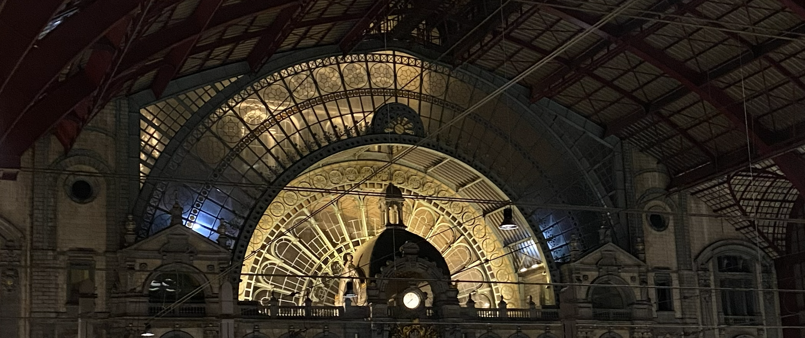

Dit dossier bundelt mijn proces van observatie tot prototype.
Ik vertaal complexe stationsinformatie naar een mobiel scherm dat rust brengt
in een context waar tijd en aandacht schaars zijn.

Focus: duidelijkheid onder tijdsdruk
Structuur: station, platform, wagon
Output: wireframes, hi fi schermen, klikbaar prototype